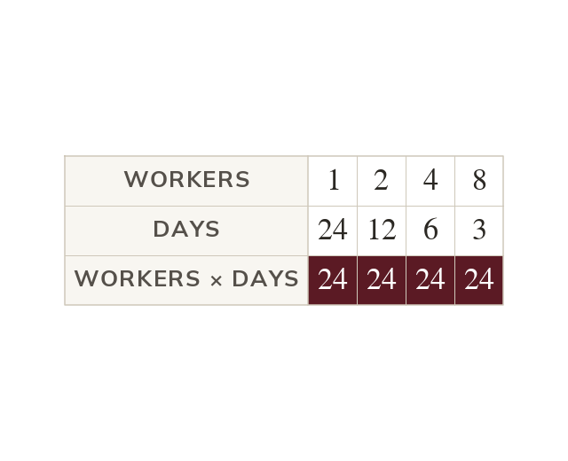
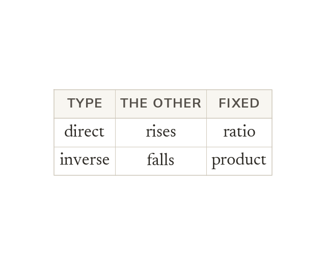
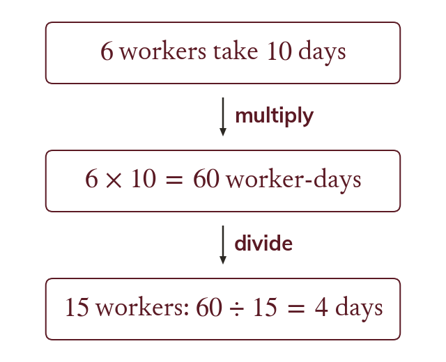
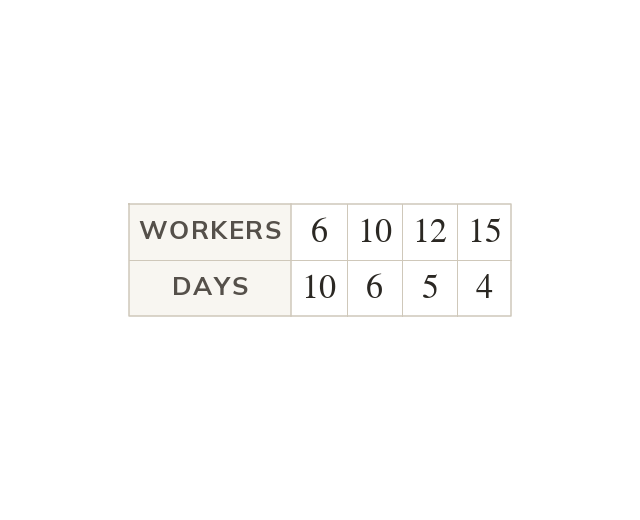

Double one, halve the other
In inverse proportion, doubling one quantity halves the other. So the product of each pair stays the same.
More workers finish a job sooner, and a faster car arrives earlier. Today we meet inverse proportion, where one quantity rises as the other falls.
Work down the page at your own pace. Write every answer in your book first, then click to check it.
Read each card, then follow the worked examples one step at a time.

In inverse proportion, doubling one quantity halves the other. So the product of each pair stays the same.

In direct proportion both quantities rise together and their ratio is fixed. In inverse proportion one falls as the other rises, and their product is fixed.
Pick an answer. If it's wrong, the feedback tells you which mistake it was.
Read each card, then follow the worked examples one step at a time.

One complete pair gives the constant product. Every other pair must make the same product.

The missing value is the constant product divided by the known value. More workers must mean fewer days, which checks the answer.
Pick an answer. If it's wrong, the feedback tells you which mistake it was.
Finished? Next lesson: 10.22.3 Graphs of Proportion.
Log in, then search for a code to practise that skill.